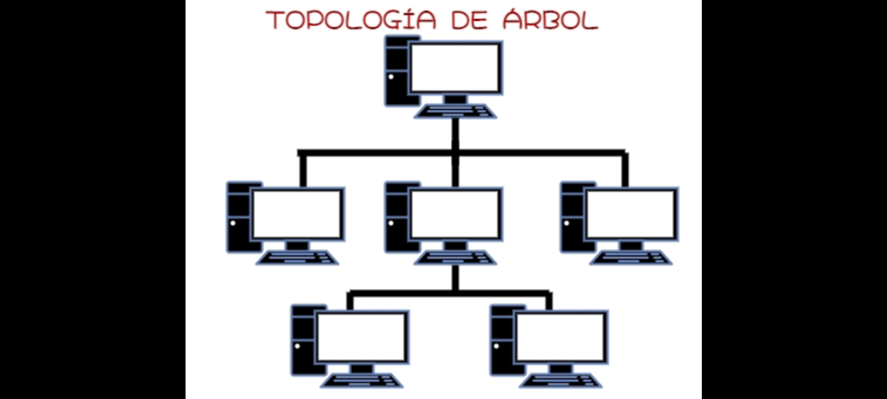

Instalacion de Red de Tipo Arbol
La Empresa de Telecomunicaciones "Comunica Todo" les ofrece el servicio de instalacion de una Red de Tipo Arbol
con equipos de calidad y cables que le permitira tener una red de calidad. Para ello le proponemos 3 equipos de los
cuales usted puede elegir para la instalacion de su red:
Personal de 3: Instalacion de Cableado y Configuracion de los repetidores
Personal de 5: Instalacion de Cableado, Analisis Estructural y Configuracion de Repetidores
Personal de 10: Instalacion de Cableado Estructurado, Analisis Estructural y Configuracion de Equipo

Analisis de Red
La empresa le enviara un equipo para que pruebe la red y su efectividad, ademas de mostrar la cantidad de datos
que se gastan en tiempo real, esto le permitira tener un orden para que cierta cantidad de datos lleguen de un
computador a otro, ademas de mantener el orden estructurado con repetidores que le permitira ampliar el area de
la red para mayor alcance y efectividad.
Cotizacion
La cotizacion de la instalacion mas los gastos en mano de obra, la integracion de equipos nuevos y el cambio de
equipos antiguos por nuevos, la cantidad de datos y el tipo de cable usado para mayor envio de datos de un computador
o otro y la efectividad de la red son la cantidad de gastos que daran porcentado para la factura. Si desea saber la
cotizacion antes de hacer los gastos, le pedimos que ingrese a nuestro correo electronico: ComunicaTodo@gmail.com
o a nuestro numero de telefono: 1-500-7777 para solicitar un profesional que le cotize los gastos.